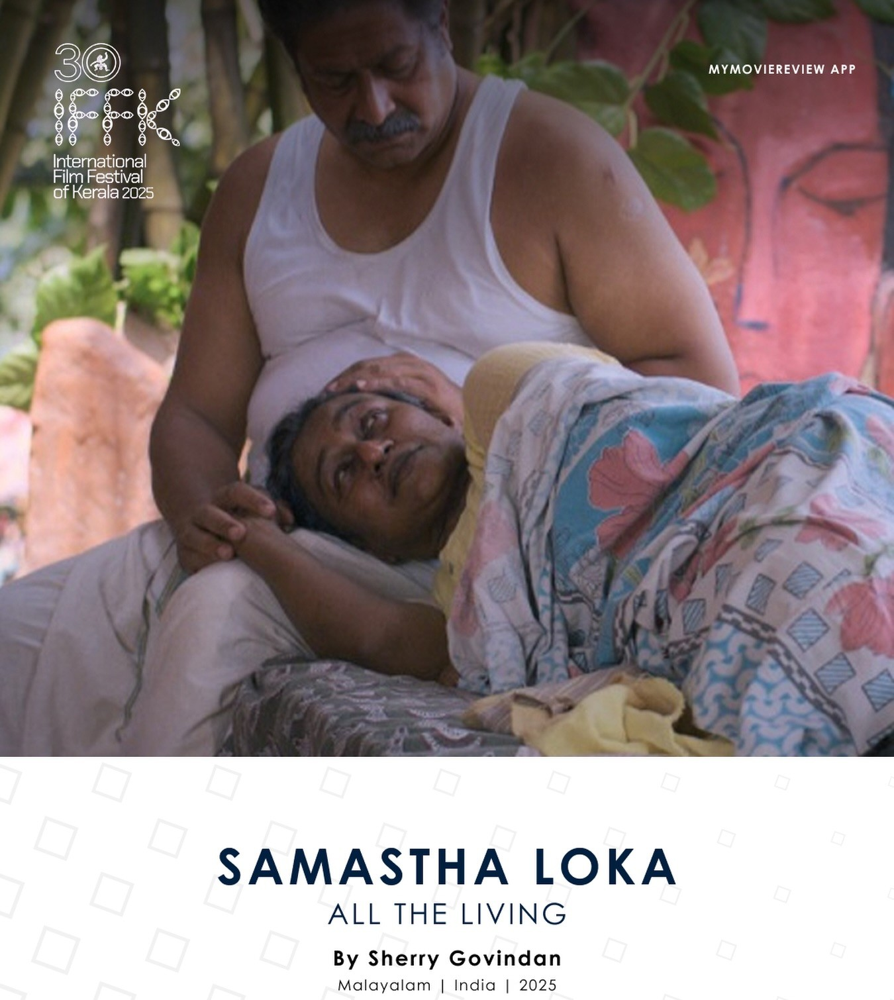

Director: ഷെറി ഗോവിന്ദൻ
Review by: എ ആർ പ്രസാദ്
ഷെറി ഗോവിന്ദൻ സംവിധാനം ചെയ്ത സമസ്താ ലോക എന്ന് പേരിട്ട സിനിമ തളിപ്പറമ്പ ഹാപ്പിനെസ്സ് ഫിലിം ഫെസ്റ്റിവെല്ലിൽ നിന്നാണ് കണ്ടത്. ഷെറിയുടെ മറ്റ് സിനിമകളേക്കാൾ കൂടുതൽ ഇഷ്ടം സമസ്ത ലോകയോട് തോന്നി. പ്രമേയത്തിൻ്റെ തിരഞ്ഞെടുപ്പിലും ദൃശ്യാവിഷ്ക്കാരത്തിൻ്റെ പരിചരണത്തിലും സംവിധായകൻ മികവ് പുലർത്തിയിരിക്കുന്നു. ടി.പത്മനാഭൻ, റെനെ ബാസെ ഇവരുടെ മൂന്ന് കഥകളിലൂടെയാണ് സിനിമയുടെ യാത്ര. [പൂച്ചക്കുട്ടികളുടെ വീട്, നായ്ക്കളും മനുഷ്യരും, തപ്പാൽപ്പെട്ടിയിലെ കുരുവി.]
മനുഷ്യരും സഹജീവികൾ തമ്മിലും, മനുഷ്യർ തമ്മിലുമുള്ള അഗാധ പ്രണയത്തിൻ്റെ മനോഹരമായ ദൃശ്യാവിഷ്ക്കാരമാണ് ഈ സിനിമ.
എഴുത്തച്ഛനെന്ന് വിളിപ്പേരുള്ള എഴുത്തുകാരൻ്റെയും ഭാര്യയുടെയും വാർധക്യകാല ജീവിതത്തെ മുന്നോട്ടുകൊണ്ടുപോകുന്നത് അവരുടെ വീട്ടിലും വീടിനു ചുറ്റിനുമുള്ളതുമായ പൂച്ചകൾ പക്ഷികൾ നായ്ക്കൾ തുടങ്ങിയ ജീവികളാണ്. പുസ്തകങ്ങളും മനുഷ്യരാണ് എന്ന് എൻ.ശശിധരൻ മാഷ് എഴുതിയതുപോലെ ഇവരെയാക്കെയും തങ്ങളെപ്പോലെ മനുഷ്യരായി തന്നെയാണ് എഴുത്തുകാരനും ഭാര്യയും കാണുന്നത് ... അഥവാ അവരൊയാക്കെയും തങ്ങളുടെ കുടുംബക്കാരെന്ന രീതിയിൽ തന്നെ എഴുത്തച്ഛനും ഭാര്യയും കാണുന്നു. അവരുടെ ജീവിതത്തിന് അർത്ഥവും ആഹ്ളാദവും നൽകുന്നത് ചുറ്റുവട്ടത്തുള്ള ഈ സഹജീവികൾ തന്നെയാണ്. ഒരു പീഡയെറുമ്പിനും വരുത്തരുതെന്ന പോലെ ഒരു ചലനം കൊണ്ടുപോലും തങ്ങളുടെ ഈ കുടുംബാംഗങ്ങൾക്ക് / കൂട്ടുകാർക്ക് ഒട്ടും ബുദ്ധിമുട്ട് വരരുതെന്ന് ഈ വൃദ്ധ ദമ്പതികൾ ആഗ്രഹിക്കുകയും ജാഗ്രത പുലർത്തുകയും ചെയ്യുന്നു. ഓണപ്പതിപ്പിന് അയക്കാനായി കഥയെഴുതിയ കടലാസ് കെട്ടുകൾക്ക് മുകളിൽ കിളി കൂടുവെച്ച് മുട്ടയിട്ടപ്പോൾ അവരെ ശല്യപ്പെടുത്തി കഥ തിരിച്ചടുക്കാതെ പത്രാധിപരോട് കഥ അയക്കാൻ കഴിയാത്തതിൽ ഖേദം പ്രകടിപ്പിക്കുകയാണ് എഴുത്തുകാരൻ ചെയ്യുന്നത്. കാത്തിരുന്ന കത്ത് വീട്ടിലെ ലെറ്റർ ബോക്സിലെത്തിയിട്ടും അത് തുറന്നാൽ ഉള്ളിൽ താമസമാക്കിയ കിളികൾക്ക് ബുദ്ധിമുട്ടാവുമെന്ന് കരുതി തപ്പാൽപ്പെട്ടി തുറക്കാതിരിക്കുകയും കിളികളുമായി സംസാരിക്കുകയും അവരെ ആശ്വസിപ്പിക്കുകയും ചെയ്യുന്ന എഴുത്തുകാരൻ കാണികളിലേയ്ക്കും ആ ആശ്വാസം പകർന്നു നൽകുന്നു. പക്ഷികളും എഴുത്തച്ഛനുമായുള്ള സംഭാഷണ രംഗങ്ങൾ ഒട്ടും കൃത്രിമത്വം ഇല്ലാതെ വളരെ സ്വാഭാവികതയോടെ ചിത്രീകരിച്ചിരിക്കുന്നത് തെല്ലൊരത്ഭുതത്തോടു കൂടിയേ വീക്ഷിക്കാനാവൂ.
മറ്റൊരു ഘട്ടത്തിൽ മരിച്ച പൂച്ചക്കുട്ടികളെ മറവ് ചെയ്യുന്ന എഴുത്തുകാരൻ അനുഭവിക്കുന്ന ഹൃദയവേദന എഴുത്തുകാരനായി വേഷമിടുന്ന ഇർഷാദ് കാണികളിലേയ്ക്ക് അസമാന്യമാം വിധം സന്നിവേശിപ്പിക്കുന്നുണ്ട്. വീട്ടിൽ വളർത്തു ജീവികളുള്ളവർക്ക് [അല്ലാത്തവർക്കും] ആ രംഗത്തിന് സാക്ഷ്യം വഹിക്കുമ്പോൾ കണ്ണിൽ നനവ് പടരും. അവയുടെ വേർപാട് തരുന്ന വേദന താങ്ങാനാവാതെ ജീവികളോട് അകലം പാലിക്കാൻ ബോധപൂർവ്വം ശ്രമിക്കുന്ന എഴുത്തുകാരൻ്റെ വീട്ടിലേയ്ക്ക് വഴിയിലുപേക്ഷിക്കപ്പെട്ട അമ്മയില്ലാത്ത പൂച്ചക്കുട്ടികളെ ആർദ്രതയോടെ അയാളുടെ ഭാര്യ എടുത്തു കൊണ്ടുവരുന്നതോടെ എഴുത്തുകാരന് സ്വന്തം തീരുമാനത്തിൽ ഉറച്ചു നിൽക്കാൻ പറ്റാതെയാവുന്നു.
മനുഷ്യരും സഹജീവികളും തമ്മിലുള്ള വൈകാരിക വിനിമയത്തിൻ്റെ അതി മനോഹരമായ സാക്ഷ്യമാണ് ഈ സിനിമ . നായ്ക്കളെയും കാക്കകളെയും സഹജീവികളെയും സ്നേഹിക്കുന്ന നമുക്ക് ചുറ്റുപാടുമുള്ള ചില വേറിട്ട മനുഷ്യ ജീവിതങ്ങളും സിനിമയിൽ കടന്നുവരുന്നുണ്ട്. ഭാര്യയുടെ വേർപാടിന് ശേഷം എഴുത്തച്ഛൻ്റെ ജീവിതം ഇവർക്കൊപ്പം കൂടിയാണ്.
എഴുത്തുകാരനായി വേഷമിടുന്ന ഇർഷാദ് കഥാപാത്രത്തിൻ്റെ ഭാവചലനങ്ങൾ സസൂക്ഷ്മം തന്നിലേയ്ക് ആവാഹിച്ചിരിക്കുന്നു. എഴുത്തച്ഛൻ ഇർഷാദിൻ്റെ അഭിനയ ജീവിതത്തിലെ ഒരു പ്രധാന ചുവടാണ്. കിളികളോട് തന്മയത്വത്തോടെ അദ്ദേഹം നടത്തുന്ന സംഭാഷണം നമ്മെ വിസ്മയിപ്പിക്കും. എഴുത്തുകാരൻ്റെ ഭാര്യയായി വേഷമിടുന്ന കുക്കുപരമേശ്വരൻ്റേതും ശ്രദ്ധേയമായ പ്രകടനമാണ്.
പ്രണയത്തിൻ്റെ ചാരുത അവരുടെ ഓരോ നോട്ടത്തിലും ചലനത്തിലും നിറഞ്ഞു നിൽക്കുന്നു. എഴുത്തച്ഛനും ഭാര്യയും തമ്മിലുള്ള ഗാഡ പ്രണയം ഒരു പക്ഷെ കുക്കു പരമേശ്വരനിലൂടെയാണ് നമ്മിലേയ്ക്ക് എത്തുക. ചുവരുകളില്ലാത്ത തുറന്ന ആകാശത്തിന് താഴെ മരണത്തെ കാത്തു കിടക്കുന്ന ദൃശ്യം ഒരർത്ഥത്തിൽ പ്രകൃതിയും മനുഷ്യനും തമ്മിലുള്ള തന്മയീഭാവം തന്നെയാണ്. കുട്ടികളും മുതിർന്നവരും വ്യാപകമായി കാണേണ്ട, കാണിക്കേണ്ട സിനിമയാണ് ഷെറി ഗോവിന്ദിൻ്റെ 'സമസ്താ ലോക'